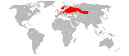
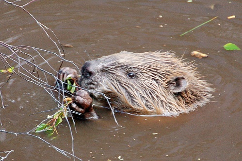

A faj kiválóan alkalmazkodott a vízi életmódhoz, élőhelye a fás vízpart. Eredetileg Eurázsia nagy részén előfordult, de a 20. század elejére Európában alig maradtak állományai: a franciaországi Rhône és a németországi Elba egyes szakaszai mellett, illetve Norvégia déli részén, a Nyeman és a Dnyeper fehéroroszországi medencéjében és az oroszországi Voronyezs környékén. A hódok Szibériában is előfordulnak, és Mongólia területén is él egy kis populációjuk.
Eurázsia legnagyobb rágcsálójának testtömege 20-35 kilogramm, testhossza 75 centimétertől egy méterig terjedhet, amihez 30-40 centiméteres, lapos, pikkelyes farok csatlakozik. Barna bundája tömött, selymes és vízhatlan, szemei és fülei kicsik, orrát és fülét bőrlebennyel el tudja zárni a víz alatt. Hátsó lábain úszóhártya köti össze ujjait.
| Ország: | Állatok (Animalia) |
|---|---|
| Törzs: | Gerinchúrosok (Chordata) |
| Altörzs | Gerincesek (Vertebrata) |
| Főosztály: | Négylábúak (Tetrapoda) |
| Osztály: | Emlősök (Mammalia) |
| Alosztály: | Elevenszülő emlősök (Theria) |
| Csoport: | Eutheria |
| Alosztályág: | Méhlepényesek (Placentalia) |
| Öregrend: | Euarchontoglires |
| Csoport: | Glires |
| Rend: | Rágcsálók (Rodentia) |
| Alrend: | Hódalkatúak (Castorimorpha) |
| Család: | Hódfélék (Castoridae) |
| Alcsalád: | Castorinae |
| Nem: | Castor Linnaeus, 1758 |
| Faj: | C. fiber |
A hód számára a tél nem a téli álom, hanem a szaporodás időszaka. A monogám szülők 105-107 napos vemhességet követően együtt gondozzák és táplálják egy-két utódukat. A fiatalok már születésük után látnak és a szőrzetük is fejlett, úszni azonban még nem tudnak. Elválasztásra kb. háromhetes korban kerül sor. A kölykök az ivarérettség eléréséig, azaz mintegy két-két és fél évig szüleikkel maradnak. Az európai hód akár 15-17 évig is élhet.
Magyarország hódállománya a 19. század közepére a vadászat miatt kipusztult, 1854-ben Ács mellett, a Concó-patakban észlelték utoljára. A faj Magyarországra való visszatérése a 20. század végén, 1991 körül kezdődött, az első példányok spontán módon érkeztek a Szigetközbe Ausztria irányából. Magyarországon 1996 és 2008 között zajlott visszatelepítési program, mely főként a Duna-Dráva területeit, a Hanság területét és a Tisza több szakaszát illetve a tapolcafői kiskerteket érintette.